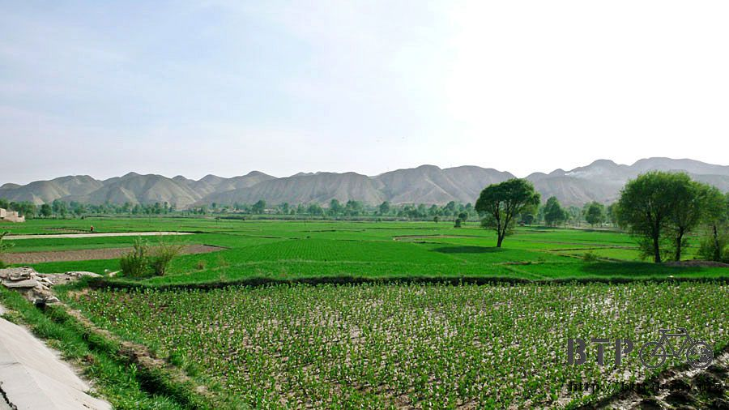
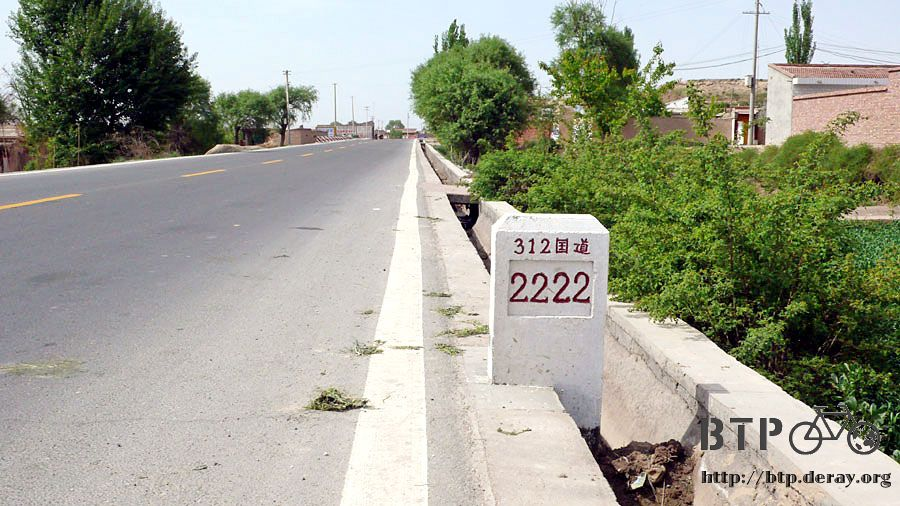
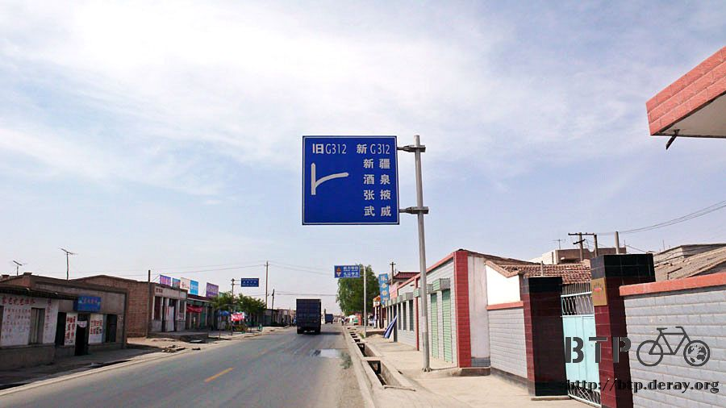
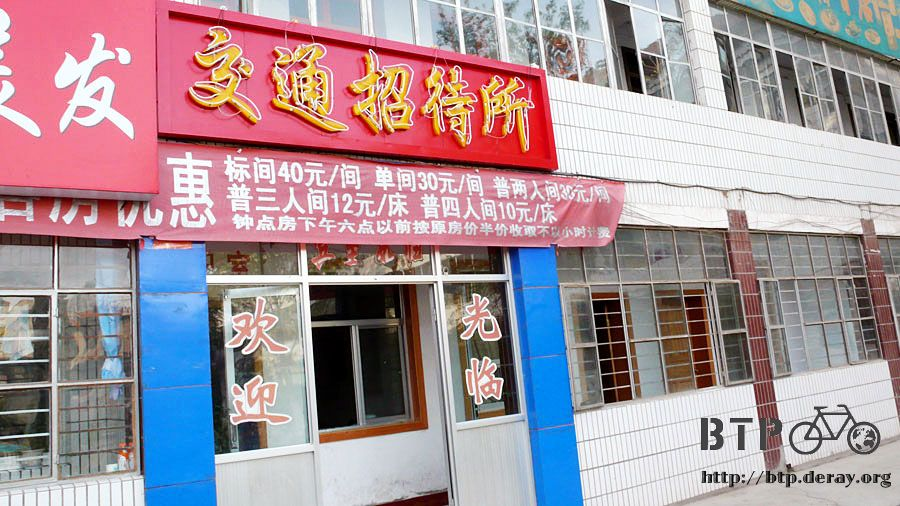
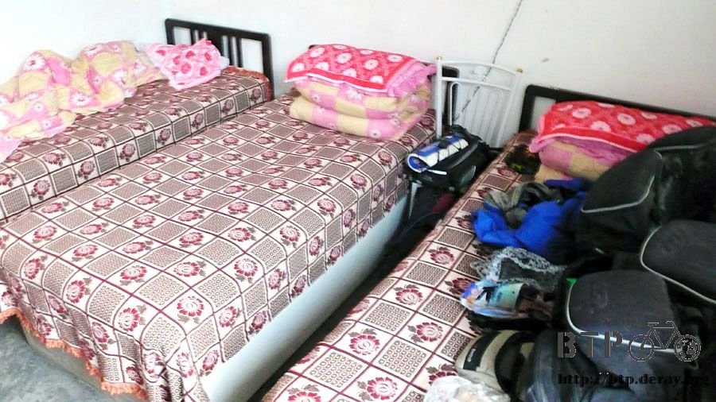

河西走廊
離開蘭州之後，路線就變得很單純，只要可以順利接上312國道的話，
那就會一路順著經過武威、張掖、酒泉、嘉峪關、玉門、敦煌這些綠洲都市，
並且可以一路騎到烏魯木齊，甚至進入哈薩克。
在甘肅部份的這一路上，是沿著河西走廊在騎乘，兩旁都是山脈，但是中間那麼巧就是凹陷的平路。
很久很久以前，張騫通西域的絲路正是沿著河西走廊而走，如今我走在相同的路上，心裡蠻興奮的。
出發之後先橫貫蘭州，這才發現昨天我閒晃只是蘭州非常小的一部分而已，
從過夜的地方，到離開蘭州市，騎了將近一個小時，一離開市區，路瞬間就又不知道在施什麼工，
爛得很令人火大，開汽車的，車子在爛路上上下下的彈跳著，看起來跟跳跳車一樣，
只好放棄用騎的，不僅我自己很累，這樣對小多也很傷，就下車用牽的走過這一段莫名其妙的路。

進入甘肅以來，我就不停的吃牛肉麵，從一開始的蘭州牛肉麵，
到後來可以加肉的清真牛肉麵，我都算不清楚自己吃了幾碗了。
離開蘭州之前，我又點了一碗牛肉麵當午餐，當然是一定要加肉的。
桌上放著一個刻著『清真』兩個字的茶壺，我心裡想，哇，好漂亮的茶壺喔，還有刻字。
招手跟店小二要一個杯子，我說我想要喝這個茶壺裡的東西。
『啥？你要喝這個，這裡頭裝的是醋呀！』
沒事裝醋的瓶子用茶壺裝幹嘛@@"好想挖個洞躲起來，因為每個店裡的客人都知道我想喝醋~_~

配著一瓶只要三毛的橘子汽水，開心的吃著好吃的牛肉麵，
雖然很好吃，但是暗自盤算，接下來別再吃這個了，換點別的東西吃吧～
當我吃飽在樹下乘涼，抹著防曬油的時候，一瞬間就被中午下課的小學生團團包圍。
『叔叔，你是幹啥的呀？』
叫我哥哥就可以了/_\
『叔叔，這車好帥呀！』
拜託請叫我哥哥>"<

這群小孩，只要在稱謂的部分修正一下，那就是一群可愛的蘿利和正太。
來～大家集合，跟『哥哥』的車子拍張照。
數位相機的好處就是拍完之後，可以馬上看結果，所以將照片輪流給每個小孩看，
大家都興奮得哇哇大叫，然後開始有人說要一個一個輪流和小多拍合照
當我吃飽閒著是嗎？=..=
其實我真的是很閒，跟這些小鬼頭聊天，介紹我的裝備，
我的手套，自己戴起來就是短指的，手指頭會露在外面，小朋友把我的手套拿去戴，結果手指頭都快看不見了。

還有說我的安全帽是烏龜殼的小孩，說小多前面還有車燈，真是太高級了。
比較世故的，還說今天能夠遇到叔叔我，他們真是太開心了！
真的，叫我哥哥就可以了，不然我就不要跟你們玩了~_~
從蘭州往西走到一個叫河口的地方，就分為兩條國道，109跟312，一條往青海，一條則往新疆。
差一點點騎往青海之後~_~浪子回頭，總算順利接上312國道。
接下來要跟這條國道相處兩千多公里，希望它的路況很良好、沿途風景很美麗，同時拜託大卡車少一點m(_ _)m

今天算是炎熱的一天，白天氣溫大概在35度左右徘徊，多虧沿路的小販幫我補充冰棒避暑，
我才得以在大太陽下有騎車的精力，只要看到有在賣冰棒的，我就停下來買兩隻，
一支邊騎邊吃，另外一支放在外套口袋裡，還可以幫身體降溫一下。
一整天下來，我本來打算吃個十五隻左右，但是只吃了八隻就騎到目的地了。
明天要是太陽還那麼大，那我就繼續吃冰棒。
再過一陣子進入人煙罕至的地方，就沒有那麼多小販陪著我了T_T
騎乘在河西走廊，感覺有點像是環島的時候騎在花東縱谷。
這走廊其實並不窄，但是兩旁都是山脈，只有這一條長長的一段有綠茵。
那些山不知道為什麼都光禿禿的，連根雜草都長不出來。
所以相較之下，這條走廊就顯得非常的翠綠和漂亮。

有些猛一看以為是水田的東西(別鬧了，這邊這麼缺水哪來的水田)，靠近一看發現原來是塑膠布田，
在陽光下反射的塑膠布，很像是水光淋漓的水田，用塑膠布把田蓋住的原因，就是要防止水分散失，農作物才種得活。

沿著312國道騎到『鐵支』的時候，看到312國道居然有兄弟！

一條是新的，一條是舊的，新的那一條把我沿路都會經過的城市通通列在上面，很有吸引力。
有點猶豫要騎新的好還是舊的好。
今天晚上住宿的時候，跟旅館老闆研究，他說新的路比較好，很像高速公路，但是出口很少，路旁都沒有鄉村和店家。

這不就是之前那個騎一整天，只有兩個出口，一個讓我吃飯，一個讓我睡覺的公路那樣的翻版嗎？
騎這種路真是無聊到翻過去，還好有先打聽過路上的情況，所以就決定繼續沿著舊的312國道走。
下午四點半，突然覺得肚子有點餓，因為天氣熱，所以想吃涼麵，
老闆什麼都會煮，可就是沒有涼麵，所以改吃乾拌麵。
我漸漸發覺這些通用的食物名詞，比如說燴麵、乾拌麵，大多只是一個概念而已。
相同名字的菜餚，但是每個廚師煮出來都很不一樣，味道跟材料都大異其趣。
像這次吃的乾拌麵，這根本就是蔬菜麵呀~_~
但是多謝老闆奇怪的乾拌麵，讓我可以一口氣吃了很多好吃的蔬菜，這陣子比較少吃到青菜說。

吃飽之後，估計再騎一個小時就可以準備落腳休息了。
我對永登也是一點都不了解，只是一個會住一晚上的路過地方而已。

找旅館的時候，看到一間交通賓館將價目表掛出來，第一眼的感覺是很好，因為這樣童叟無欺，
價錢不會因人而異，然後我就看著這張價目表，開始思考自己目前對於住房的價錢接受度為多少。
要是我旅行第一天看到這張價目表，我一定會大呼小叫好便宜、超便宜、簡直便宜到爆了！
現在就不這麼想了，老闆打開窗戶朝手叫我上去登記，我則揮手跟他說再見。

後來找到一間十塊錢的旅店，因為老闆很和善，價錢也便宜，所以就住下來了。
一住才發現是三人房，裡頭已經先住了一個騎摩托車旅行兼打工的大叔，
所以今天我又要跟自己的行李背包一起擠在床上睡覺。

騎摩托車旅行的大叔知道我明天要騎到武威去，就跟我說路況。
(他今天從張掖騎到這裡，這是我騎自行車得花三天的路程)
明天要爬一座烏鞘嶺，高約2700公尺，也就是明天要往上爬一千公尺。
大叔說那坡度很陡，我可能騎不上去，要用牽車的，不過上坡不長，大概四公里多一點而已。
這個旅館其實就是老闆他們自己的家，用冰涼的水洗衣服的時候，我突然好想喝一口冰水，

但還是先問一下可不可以喝比較妥當，老闆說這是自來水，可以喝的，沒問題！
如果他說這是井水或是泉水的話，我一定會大口大口的喝，但是自來水就......
因為不想再吃牛肉麵了，晚餐就吃排骨朵麵片，
本來以為是一道菜，但卻是排骨和麵片分開的料理。
排骨是小塊用滷的，不油不膩，咬一口骨頭和肉就會分離，
配上新鮮的蔥段，那種甜甜又帶點辛辣的味道，和美味的滷排骨挺合的。

這一間是老店，在這邊名氣似乎不錯，店裡坐滿了客人，大家都是一斤兩斤的點排骨來吃，
我只有一個人，所以就點半斤來滿足一下口腹之慾。
麵片就蠻普通的，就把麵條弄成一片一片這樣，然後湯頭很像是酸辣湯，
跟美味的排骨相比，整個就遜色掉很多。
挺著圓滾滾的肚子，走回旅館，看到老闆和熟客人在玩撲克牌。
原本以為他們應該是在玩某一種我連聽都沒聽過的紙牌遊戲，但仔細聽他們的對話。
『唉呀，我連一張二都沒有呀！』
『三一張，那我五一張。』
我才發現他們在玩的是大老二，這個我也會玩呀！
正想出去加入戰局的時候，我才發現他們玩的規則有點詭異......@@"
『這個三條為什麼不能搭一支呢？一定得搭一對，這規則太死了。』
『三到八！』嗯，聽起來是出了順子。
不對！
三到八 ？？ ？
為什麼是三到八？這樣不就是『三、四、五、六、七、八』一個順子有六張牌>"<
先別笑，因為還沒完，這個『三到八』，居然還缺了一張六！可是還是照出不誤，而其他人也沒有意見，
彷彿規則就是這樣子玩的orz
本來興致勃勃的想跟著玩，但是聽他們玩牌的對話，讓我在房間裡面忍著笑，肚子很難過。
如此亂打一通的大老二，居然還有賭錢，一次輸贏五毛。
本來想說以我的大老二造詣，應該可以賺點冰棒錢，
但是在這種奇怪的規則下，說不定我會輸得脫褲子。
繼續閱讀：5.17 我愛烏鞘嶺
中國-人民幣－ 1：4.3 台幣
5.16 |
總計：39.1元 |
早餐小籠包一籠3元、冰棒八隻4元、午餐牛肉麵5元、橘子汽水0.6元、點心乾拌麵4.5元、晚餐半斤滷排骨9元、麵片3元、住店10元 |
|